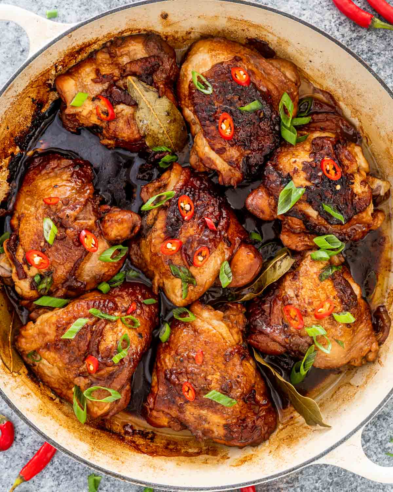

Chicken Adobo

Back to home
Description
Chicken Adobo is the unofficial national dish of the Philippines, known for its tangy, garlicky, and umami-rich flavor.
Simmered in soy sauce, vinegar, garlic, and bay leaves, it’s a comforting one-pot meal that pairs beautifully with rice.
Ingredients
- 1 kg chicken thighs/drumsticks
- 1/2 cup soy sauce
- 1/2 cup vinegar
- 6 cloves garlic, crushed
- 2 bay leaves
- 1 tsp whole peppercorns
- 1 tbsp brown sugar (optional)
- 1 cup water
Steps
- Combine soy sauce, vinegar, garlic, bay leaves, peppercorns, and sugar in a pot.
- Add chicken and marinate for 30 minutes.
- Bring to a boil, then reduce heat and simmer for 40 minutes.
- Remove chicken, brown in a separate pan, then return to sauce.
- Simmer until sauce thickens slightly.
- Serve with steamed rice.